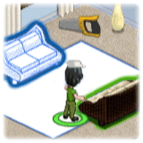

14 |
Build Phase Basics |
 |
 Building Items:
Building Items:To start building furniture you must direct a worker to an item. To direct a worker to an item:  Select a worker by pointing the Wii Remote at one of them and holding down Select a worker by pointing the Wii Remote at one of them and holding down  . .This will pick up the worker and allow you to move them freely around the room. Simply release to drop them on one of the unfinished pieces of furniture.Highlighted Furniture  Sometimes the furniture is highlighted to match the color of a certain worker. When this occurs, select the worker that will match and direct them to work on that item. Sometimes the furniture is highlighted to match the color of a certain worker. When this occurs, select the worker that will match and direct them to work on that item.Matching workers and highlighted furniture will help to lessen energy loss and prevent injuries. Calendar  The Calendar is found in the upper right-hand corner. It shows you the amount of time you have to complete a project. The Calendar is found in the upper right-hand corner. It shows you the amount of time you have to complete a project.As the team builds, and time passes, the Calendar will automatically countdown to 0 days left. If the Calendar reaches 0 days left before the team is finished building the room, the Building Phase restarts. Build Speed Boost If you want to get the job finished on time, you are going to have to help out! You can help a worker with their building task by pointing the Wii Remote at them and holding down  . This will display the tool they are currently using. . This will display the tool they are currently using.While holding down , mimic the Wii Remote in the motion shown in the Toolbox Display.This will give the worker a Build Speed Boost while you help them.  Keep an eye out for a worker who is requesting help. A worker in need of assistance will stop working and won't continue until you help them. Keep an eye out for a worker who is requesting help. A worker in need of assistance will stop working and won't continue until you help them.
|
 |
 |
 |